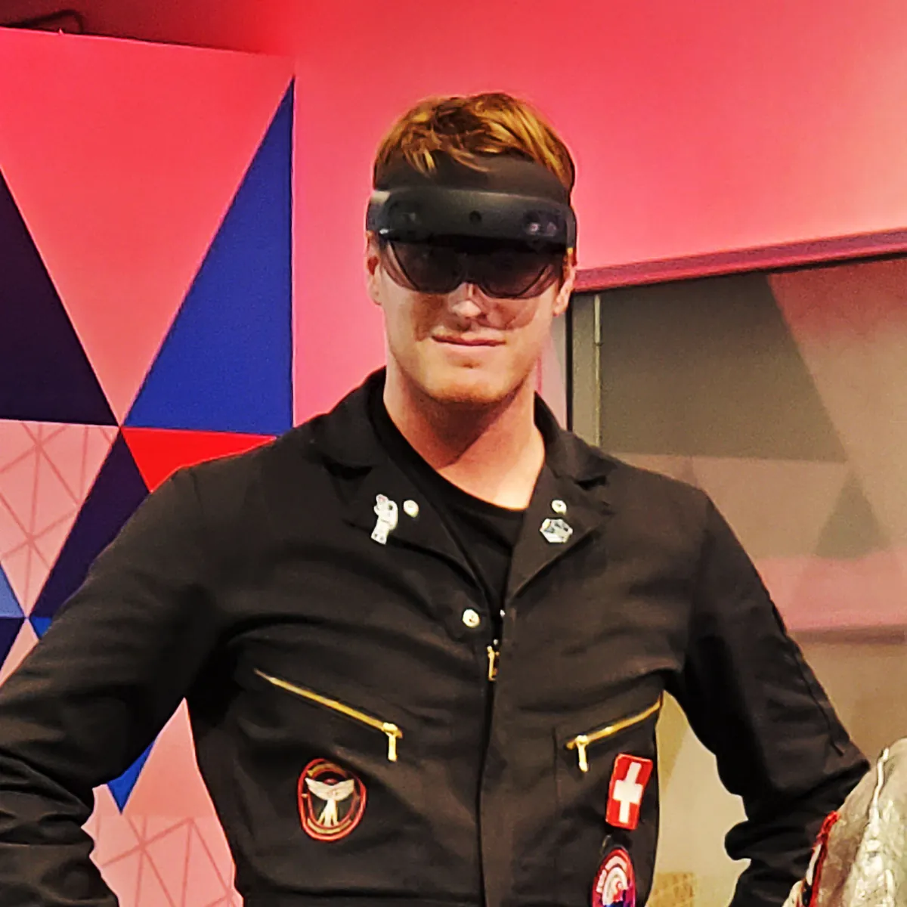
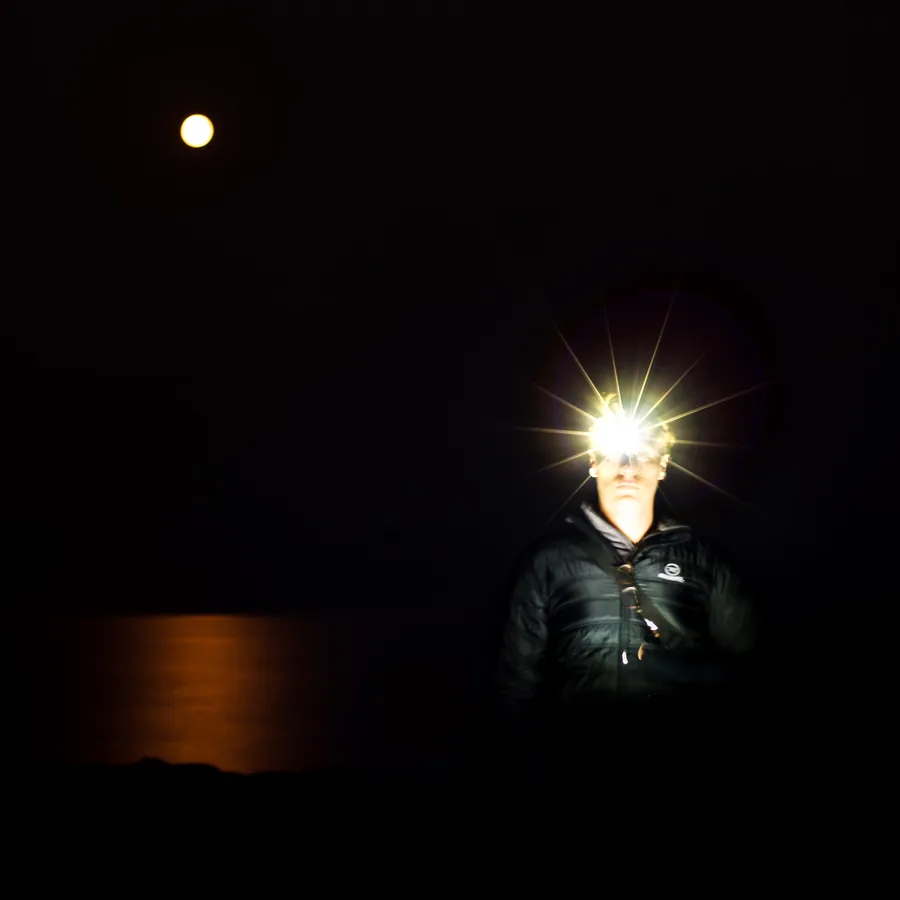

![](data:image/svg+xml,%3Csvg role='img' aria-label='John Hanacek signature' xmlns='http://www.w3.org/2000/svg' viewBox='0 0 150 75'%3E%3Cpath fill='%23ffffff' d='m148.6 13.3c-0.3-0.6-2.9 0.3-3.7 0.4l-0.4 0.2-0.8 0.1c-0.2-0.2-1 0.4-1.1 0.2l-0.8 0.3h-0.3l-1.1 0.3-0.7 0.1-0.9 0.3h-0.7l-0.8 0.3h-0.7l-0.7 0.3h-0.9l-0.6 0.3h-0.8l-0.8 0.3-0.9 0.1-0.8 0.2-0.7 0.1-0.3 0.2-0.6-0.1-0.2 0.3h-0.9l-0.8 0.3-0.3-0.1-1 0.4-0.4-0.1-0.3 0.2h-0.5l-1.2 0.4-0.9 0.1-1.1 0.3-0.9 0.1-1.6 0.4h-0.4l-0.4 0.2h-0.4l-1.2 0.3-2.4 0.5-1.4 0.4-1.4 0.2-1.2 0.4h-0.4l-0.9 0.3-0.6 0.1-2.1 0.5-1 0.4-1 0.1-1 0.4h-0.3l-0.4 0.3h-0.4l-2 0.6-0.9 0.1-1.1 0.5-1.2 0.2-0.8 0.3h-0.5l-0.8 0.4-0.6 0.1-2 0.6-0.2-0.2v-0.9h-0.2l0.3-0.4-0.2-0.4 0.2-0.4-0.2-0.1 0.1-2.1-0.2-0.1 0.2-0.5-0.2-0.2 0.2-0.4-0.2-0.3 0.3-0.2-0.2-0.4 0.1-3.5v-1.1l0.3-0.3-0.2-0.4 0.2-1.6 0.1-3.5 0.2-2 0.2-0.4 0.1-2.1 0.2-0.5 0.1-1.9 0.7-0.5c0.2-0.2 0.2-1.1 0-1.1-0.4-0.3-1.9-0.5-2.3 0-0.3 0.5-0.6 1.6-0.6 2.3l-0.1 0.2v1l-0.2 0.3-0.2 1.7-0.1 0.3-0.1 3.1-0.2 0.1v2l-0.2 0.3-0.1 3.1-0.2 0.2v3.1h0.2l-0.4 0.6 0.3 0.3-0.2 0.5 0.2 0.2-0.2 0.4v3l0.2 0.1-0.2 0.4v2.6l0.2 0.3-0.5 0.4-0.3-0.1-0.6 0.4-0.8 0.1-1 0.5-0.5-0.1-0.2 0.3-0.6-0.1-0.1 0.3-0.6-0.1-0.2 0.3-0.4-0.1-0.2 0.3-0.4-0.1-0.2 0.3h-0.4l-1.8 0.5h-0.3l-0.7 0.4-2.3 0.5-0.2-0.8 0.2-0.6-0.2-0.3 0.2-0.2 0.1-3.6 0.2-0.2-0.1-0.9 0.2-0.3-0.2-0.4 0.2-0.1-0.1-1.1 0.2-0.5-0.1-1 0.3-0.4-0.2-0.6 0.2-0.1 0.2-3.4 0.2-0.9v-0.8l0.2-0.3 0.1-2.1 0.2-0.8 0.2-0.6 0.1-1.5 0.2-0.4 0.1-0.7 0.3-0.2c0.3-1.6 1.6-1.1 1.2-2.5-0.5-0.6-1.9-0.9-2.5-0.5-0.6 0.7-1 2.3-1.3 3.3l-0.1 1-0.2 0.2-0.1 1.2-0.2 0.3v0.9l-0.2 0.3v0.8l-0.2 0.1-0.1 2.2-0.2 0.1-0.1 2-0.2 0.1-0.1 2.6-0.1 0.1v1.9l-0.2 0.3v2l-0.3 0.5 0.2 0.2-0.1 3.2h-0.1l0.1 1.5-0.2 0.2 0.2 1.1-0.3 0.3v0.2l-1.3 0.4-0.2 0.2h-0.5l-0.5 0.3-0.8 0.1-1.9 0.7-0.5 0.3h-0.5l-2.4 0.9-1.3 0.5-1.2 0.2-1.7 0.7-0.1-0.2 0.5-1.4 0.6-0.8 0.4-1.4 0.3-0.6v-0.4l0.6-1.7v-0.4l0.4-0.2v-0.5l0.6-1.4 0.1-1 0.4-1.1 0.1-1.5 0.3-0.4 0.1-1.5 0.2-0.3 0.1-2.2 0.2-0.5-0.1-0.7 0.2-0.2-0.1-0.4v-2.2l-0.2-0.5v-1.1l-0.3-0.7v-0.6l-0.3-0.5c-1.1-2.3-3.1-3.3-6.2-3.5h-2.8l-0.2 0.1c-1.3 0.2-3.5 0.6-4.7 1.1l-0.3 0.2-0.5 0.1-2.2 0.9-0.1 0.2-0.7 0.2-1 0.6-2.5 1.2-1.5 0.9-0.3 0.1-1.8 1.1-0.3 0.1-0.3 0.3-2.7 1.6-0.7 0.6-1.7 1-3.2 2.5-0.3 0.2-1.4 1.2-1.6 1.6-0.3 0.1-0.1 0.4-1.5 1.3-0.4 0.5-0.2 0.4-0.5 0.3-0.7 0.9-0.2 0.1v0.3l-1.2 1.5-0.4 0.2-1 1.3-0.3 0.2-0.7 0.9-1.2 1.3-0.2 0.2-0.6 0.9-0.6 0.6-0.1 0.4-0.4 0.3-2.6 3.8c-0.5 1.3 1.1 2.1 1.5 1.8s0.6-1 0.9-1.5l0.3-0.2 0.2-0.6 1.1-1.4 0.3-0.1v-0.4l1.6-1.9 0.3-0.2v-0.2l0.6-0.6 0.8-1.1 0.4-0.1 0.1-0.4 0.9-0.8 0.2-0.5 1.2-1.3 0.2-0.3 0.8-0.7 0.3-0.5 3.1-3.1 1.2-1 0.1-0.2 2.2-1.8 0.2-0.1 1.9-1.5 1.7-1.2 0.4-0.4 2.1-1.3 0.5-0.4 1.1-0.6 0.5-0.4 1.3-0.7 0.4-0.3 1.5-0.8 0.7-0.5 2.4-1.2 0.5-0.2 0.3-0.3 3.4-1.3 2.3-0.7 0.3-0.1 1.2-0.3 1.2-0.2h0.5l0.1-0.1c0.7-0.1 2.4-0.1 2.8 0l0.2 0.2h0.4l1.3 0.4 0.9 1v0.4l0.4 0.7 0.2 2.2v1l-0.2 0.2 0.2 0.2-0.2 0.4 0.2 0.3-0.2 0.2 0.1 0.5-0.3 0.6c0.1 1.3-0.1 2.2-0.6 3.1l-0.1 1.4-0.3 0.3-0.2 2.6-0.8 1.7v0.5l-0.4 0.8-0.1 1.1-0.4 0.9-0.2 0.7-0.2 0.1-0.2 0.9-0.4 0.7v0.4l-0.4 0.6-0.1 0.6-0.3 0.3-0.8 1.9-0.5 0.4-0.1 0.1-1.2 0.5-0.7 0.1-2.7 1.1h-0.3l-0.4 0.3-0.8 0.2-0.9 0.4h-0.4l-0.3 0.3-1.3 0.4-0.3 0.2h-0.4l-0.7 0.4-1.3 0.4-0.3 0.3h-0.5l-0.5 0.3-3.3 1.1-0.3 0.2-0.7 0.2-0.7 0.5-1 0.2-0.5 0.4h-0.5l-1 0.4h-0.3l-0.2 0.4-0.8 0.1-0.5 0.3-0.5 0.1-0.4 0.3-0.6 0.1-0.2 0.2-0.9 0.3-0.3 0.2h-0.3l-0.6 0.4-0.7 0.2-1.5 0.7-1 0.3-0.3 0.2-1.1 0.4-1.8 0.9-0.5 0.1-0.2 0.3-0.6 0.1-0.7 0.5-0.5 0.1-0.8 0.5-0.5 0.1-0.4 0.3-1.1 0.5-0.5 0.3-0.5 0.1-1 0.7-0.5 0.2-1 0.7-0.5 0.2-1.2 0.8-0.5 0.2-2.2 1.4-0.6 0.4-1.5 1.1-0.5 0.5-0.4 0.1-0.2 0.3-2.4 2-2.2 2-0.8 1-0.9 1c-0.6 0.9-1.9 3-1.3 5.2l1.1 1.3 1.4 0.9 0.5 0.2 0.7 0.4 1.5 0.4h0.6l0.4 0.2h3.5 0.3l0.1-0.1 0.5 0.2 0.2-0.2h1.2 0.2l0.3-0.2 1.2-0.1 0.8-0.3h0.7l0.5-0.2 1-0.1 0.6-0.3h0.4l1.1-0.4 0.9-0.2 1-0.5 0.6-0.2 0.7-0.3 0.7-0.2 0.5-0.3 0.5-0.1 1.5-0.7 0.5-0.3 0.5-0.2 0.5-0.3 0.6-0.1 1.2-0.8 0.7-0.2 0.8-0.5 0.5-0.1 1.2-0.8 0.5-0.2 0.5-0.4 0.8-0.5 0.5-0.2 0.9-0.7 0.6-0.3 0.5-0.5 0.6-0.2 1.5-1.1 0.6-0.3 0.3-0.3 0.7-0.4 1.5-1.2 0.5-0.3 1.3-1.1 0.5-0.3 1.5-1.4 0.3-0.3 0.4-0.3 4.8-4.7 1-1.2 0.5-0.5 0.9-1.1 0.3-0.4 0.5-0.7 0.4-0.6 1-1.2 0.6-1.1 0.3-0.3 0.7-1.3 0.4-0.5 0.5-1.1 0.5-0.7 0.6-1.4c0.8-2 2.1-1.8 3.8-2.5l0.7-0.2 0.3-0.2 1-0.3h0.4l0.3-0.2 0.8-0.2 0.3-0.2 1.9-0.5 0.5-0.2 0.6-0.1 0.7-0.4 0.7-0.1 0.5-0.2 0.5-0.1 0.8-0.4 1-0.3 0.2 0.3-0.2 0.6 0.3 0.6-0.1 0.5 0.2 0.3v1.5l0.2 0.1-0.1 0.3 0.1 3.1 0.2 0.9v0.5h0.2l-0.2 0.5 0.2 0.1 0.1 1.6h0.1l0.1 1.4 0.2 0.5v0.7l0.2 0.3v0.6l0.2 0.2 0.1 1.1 0.2 0.2 0.1 1 0.2 0.1v0.7l0.3 0.5 0.1 0.9 0.2 0.1 0.5 1.8 0.2 0.2 0.1 0.6 0.3 0.5 0.1 0.5 0.4 0.4v0.3l0.2 0.3c0.6 1 1.9 3 2.6 3 0.5 0.1 1 0 0.9-0.3 0.1-0.3-0.7-1-1.2-2.3l-0.7-0.9-0.5-1.5-0.3-0.4v-0.4l-0.2-0.2-0.1-0.6-0.3-0.5v-0.5l-0.3-0.5v-0.4l-0.7-2.4v-0.6l-0.2-0.3-0.1-1.3-0.2-0.4v-1l-0.2-0.4-0.1-2.1-0.3-0.1 0.2-0.9-0.3-1.4v-1.2l-0.2-0.3 0.2-0.2-0.1-1.3 0.2-0.2-0.3-0.2v-2l-0.2-0.2 0.2-0.3-0.2-0.4 0.2-0.8-0.2-1.2 1-0.4h0.5l0.2-0.4h0.6l0.4-0.2h0.5l0.8-0.4 0.8-0.1 0.7-0.4h0.5l2.1-0.7 0.6-0.1 0.6-0.3 2.4-0.6 0.4-0.2v1l0.2 0.1v2.3l0.3 0.3-0.3 0.2 0.3 0.6-0.2 0.2 0.2 0.3v1.5h0.1v1.1l0.2 0.3v1.8l0.2 0.3v1.6l0.3 0.4 0.1 1.4 0.2 0.5 0.1 1.2 0.2 0.3v0.5l0.2 0.2v1l0.2 0.4 0.1 1.1 0.2 0.3 0.1 0.8 0.2 0.3 0.1 1 0.2 0.4 0.1 0.8 0.2 0.3 0.1 0.7 0.3 0.4v0.5l0.3 0.4 0.1 0.9 0.3 0.3v0.4l0.3 0.4v0.4l0.3 0.3v0.4l1.6 2.6c0.6 1 1.1 0.9 1 0.7 0.5-0.4-0.4-2.3-0.7-2.9l0.1-0.1-0.8-2.4-0.2-0.1v-0.5l-0.3-0.4-0.1-1-0.3-0.4v-0.6l-0.2-0.3v-0.5l-0.3-0.3-0.1-1.3-0.2-0.2-0.1-0.9-0.2-0.5v-0.6l-0.3-0.4-0.2-1.9-0.3-0.1 0.2-0.4-0.2-1.2h-0.2l0.2-0.5-0.2-0.3-0.2-2.7h-0.2l0.1-1.4-0.3-0.1v-2.3l-0.2-0.2v-3.5l-0.2-0.2 0.2-0.3-0.1-1.5-0.2-0.1 0.2-0.4-0.1-0.8 1.1-0.6 1.1-0.3 2.3-0.7 0.7-0.1 3.8-1 0.7-0.1 1.8-0.5 0.4-0.2 1.3-0.4h0.3l0.5-0.2 0.6-0.1 0.6-0.2h0.5l0.5-0.2 3.5-0.9h0.4l0.2-0.2h0.5l1-0.3h0.4l0.4-0.2 0.4 0.1 0.2-0.2h0.8l2.2-0.6 0.8-0.1 0.2-0.2 0.4 0.1 0.4-0.2h0.6l0.4-0.2h0.5l0.5-0.2 0.6-0.1 0.5-0.2 0.6-0.1 1-0.2 1.2-0.3h0.5l0.4-0.3h0.4l3.5-0.8h0.8l0.5-0.3 1-0.1 2.2-0.6 0.9-0.2h0.5l0.4-0.2 0.8-0.1 1.8-0.5 0.6-0.4v0.4l0.5-0.5h0.4l2.1-0.6 0.8-0.2 1.3-0.6 0.9-0.2 1.3-0.8 0.7-0.2v-0.5zm-91.1 27.3-0.7 1v0.4l-0.4 0.4-0.2 0.6-0.3 0.4-0.3 0.6-0.3 0.2-0.1 0.4-0.5 0.5-0.1 0.5-0.4 0.2-0.1 0.6-1.7 1.7v0.4l-2 2.1-0.3 0.4-4.5 4.1-1.1 0.9-0.4 0.4-0.5 0.3-1.7 1.4-0.3 0.1-0.1 0.3-0.6 0.2-2 1.5-2.3 1.5-0.5 0.3-0.2 0.2-0.3 0.1-2 1.3-0.7 0.3-1.5 0.9-0.5 0.4-0.5 0.2-1.3 0.7-0.5 0.2-1 0.6-0.5 0.1-0.7 0.5-3.3 1.4-0.7 0.2-0.5 0.3-0.5 0.1-1.2 0.4h-0.6l-0.4 0.3-0.6 0.1-1.7 0.7-1.9 0.4h-0.4l-1.2 0.7h-2.5l-0.9 0.8-0.1-0.2-1 0.1-1-0.2h-1l-1.5-0.4-0.5-0.2-0.5-0.5v0.2c-0.8-0.7-0.5-2.6 0.5-3.7l0.2-0.5 0.5-0.4 0.3-0.6 2.2-2.2 0.3-0.2 0.1-0.3 0.4-0.2 1.5-1.4 0.5-0.2 0.2-0.4 1.3-0.9 0.2-0.3 0.5-0.2 1-0.8 0.5-0.5 0.8-0.4 1-0.7 0.5-0.2 0.7-0.6 0.6-0.3 0.4-0.3 0.5-0.2 0.5-0.5 0.5-0.1 1.8-1.1 0.5-0.2 1.2-0.7 0.5-0.2 0.3-0.3 0.7-0.2 0.6-0.4 0.7-0.3 0.6-0.3 1.2-0.7 1.2-0.5 0.2-0.2 0.6-0.1 0.7-0.4 0.5-0.1 0.5-0.3 0.7-0.2 0.5-0.3 1.3-0.4 0.2-0.2 0.8-0.1 0.2-0.4 0.8-0.1 1.7-0.9 0.5-0.1 1-0.5 0.6-0.1 2.2-0.9 0.5-0.1 0.7-0.4 0.8-0.2 0.2-0.2 1-0.3 0.8-0.4 0.5-0.1 0.5-0.3 0.7-0.2 0.5-0.3 0.6-0.1 2.2-0.8 0.5-0.1 0.5-0.3 1.2-0.3 0.3-0.2 0.5-0.1 0.5-0.4 0.7-0.1 1.3-0.5 0.7 0.1v0.1l0.1 0.2-0.2 0.2z'/%3E%3C/svg%3E)
Bio

Product Designer & Design Engineer building AI-native products and spatial computing interfaces.
I design and code agentic systems, interactive experiences, and AI-augmented tools. Whatever the problem calls for: context engineering, agent orchestration, data architecture, web, mobile, XR, robotics, poetry and art.

Since 2012 I've served as founding designer for startups and R&D teams. The work is 0→1 product development, design system creation, and technical prototyping, now through JHDesign LLC (est. 2024). Current explorations: MetaMedium, dynamic tools that adapt to thought, and Earth Star, an autonomous creativity & research system.
Off the clock
Based in San Diego. I'm a UCSD alum who went east for grad school in DC, toured with friends' band, then came home to the ocean on purpose. I cook from scratch: albondigas, rice tahdig, whole fish on the grill, a brownie recipe from memory. I garden native California plants. I hike, camp, and photograph across Southern California. I also go camping in the Sierra Nevada mountains.

Work Experience
Independent Product Design Engineer
- OpenProse (2026): founding design. Brand, design system and trace visualization experiments, delivered as code.
- Muse.bio (2024, 2026): user-journey and personas workshops. Built a Claude Code + Figma MCP system that turns workshop output into structured results, then handed the whole system off.
- JH Coaching OS: shipped an AI coaching product: agent, curated materials, context docs and dashboard. Clients leave with a working chief-of-staff agent or the skills to build their own.
Lead XR Product Designer
- Led product design for Nanome 2 release on Meta Quest, the companion web portal integrated with AI assistant. Supervised the visionOS beta.
- Ran 24 alpha and beta sessions with scientists at Pfizer, Novartis and academic labs. Coded the feedback into bugs, questions, evidence and patterns.
- Replaced teleport navigation with Spotlight/Follow: labeled cursors and a shared, non-rivalrous molecule. A pillar of Nanome 2.
Immersive UI/UX Designer
- Designed the AROC situational-awareness AR HUD and its modular layout grid, with hand tracking on Meta Quest and HoloLens 2.
- Insurance damage-assessment VR demo - simulated New York for Munich Re.
Founding CEO/CTO, Co-Founder
AvatarMEDIC, Inc.
- Co-founded a medtech startup for remote trauma intervention through XR telepresence and robotics. Led strategy, pitching, concept and engineering direction. Founder Institute SF (2020).
- Built the Unity robot demo, visual design, animatics and composites. The digital-twin robotic medical assistant won the Aerospace Medical Association's R&D Innovation Award (2022).
UI/UX Design Lead
Collaborate.org
- Product design and interactive mockups, remote.
Graduate Associate
CNDLS, Georgetown University
- Pedagogical tools. Co-authored EDULEARN15 research on the spread of technology-enhanced teaching.
Designer, Photographer, Product Maker
Independent practice (JHphotography, JHDesign)
- Blok Dok (2013): designed, made and sold a wooden iPhone dock, with packaging, labels, instructions and photography.
Primary Photographer
Qualcomm Institute (Calit2), UC San Diego
- Event coverage, technical documentation and portraiture.
Photo Editor & Photojournalist
UCSD Guardian
- Primary photography; coordinated staff photographers for editorial needs.
Ocean Lifeguard (seasonal)
California State Parks
- Aquatic rescue, public safety and first aid; Junior Lifeguards instructor.
Education
Georgetown University
Washington, DC · 2014–2016
MA, Communication, Culture & Technology
Thesis: “As We May Sketch”: AI-interpreted drawing interface, a riff on Bush's 'As We May Think'. Supporting papers: 'Art Math, Math Art', the precursor to MetaMedium. Second thesis: Political and social implications of technology standardization.
"Most Meta", voted by peers (2016)
UC San Diego
La Jolla, CA · 2008–2012
BA, Political Science / International Relations; minor in Neuroscience
Thesis: Remotely piloted aircraft and just war theory, closing on ground robotics deployment.
Areas of Expertise
Design & Product
- User Research
- 3D Interaction Design
- Product Design & Prototyping
- Design Systems Architecture
AI & Development
- LLM Integration & AI Coding
- Agent Orchestration
- Intelligence Augmentation
- Conversational UX
Physical/Virtual Convergence
- Robot Control & Manipulation
- Digital Twins & Teleoperation
- 3D Scanning & Photogrammetry
- XR / Spatial Computing UX
How I Work
Handling Disagreement
Does the best design available at the level of authority he has, and advocates for what he thinks is best for the product. Works with engineering to think through ways to make a thing easier to build while still getting what the user needs. more →
Ambiguity and Constraint
Ambiguity is where he works best. He is always looking for structure, including the unspoken structure inside processes everyone already considers settled. more →
Critique and Design Reviews
Runs critique playfully, leaning on open-ended "how might we" statements to avoid solutionizing, where a design gets taken too literally too early. Sets expectations going into any review, manages stakeholders, and levels with peers. more →
Working with AI
Treats AI as an omni-developer that is a bit too obedient, which makes clear definitions and expectations the designer’s job. Builds systems to verify output. more →
Failure and Resilience
AvatarMEDIC was ambitious and too early, underfunded, and eventually his own capital was exhausted. He gave up the fundraising product dream and pivoted the company into a consultancy that brought in revenue. more →
Awards & Recognition
R&D Innovation Award
Aerospace Medical Association (AsMA)
XR digital-twin robot control (AvatarMEDIC concept prototype)
NIST CHARIoT Challenge, Phase 2 Winner
National Institute of Standards and Technology
A1R, Augmented First Responder
Microsoft Reactor Hackathon Winner
Microsoft
HoloTRIAGE, HoloLens 2 medical triage training
Founder Institute Graduate
Founder Institute, San Francisco
as CEO of AvatarMEDIC
AT&T 5G Hackathon Winner, Best VR/AR/MR or Gaming Solution
SAR 5G, search-and-rescue coordination on Magic Leap One
"Most Meta"
Georgetown CCT
voted by peers
Research, Talks & Publications
AWE USA 2024
Spatial Design: Breaking the 2D Paradigm
Contributor, interviewed as an expert · about the book
Dominique Wu · 2024
Master’s thesis
AI-interpreted drawing interface, a riff on Bush's 'As We May Think'. Supporting papers: 'Art Math, Math Art', the precursor to MetaMedium.
EDULEARN15, Barcelona
Capturing, Tracing, and Visualizing the Spread of Technology-Enhanced Instructional Strategies
D. Davis, J. Hanacek, A. Myers, S. Mulroney, S. Pennestri, Y. Vovides
Atlantic Council: Strategic Foresight
Internet as Answer Engine, Part I · Part II
March 2014: answer engines displacing search, eight years before ChatGPT
The Problems of Agent Orchestration
The Problems of Agent Orchestration
2026: a 37,000-word essay, released through the playground
Connect
Work With Me
AI coaching with the JH Coaching OS, founding designer engagements, and agentic systems consulting.